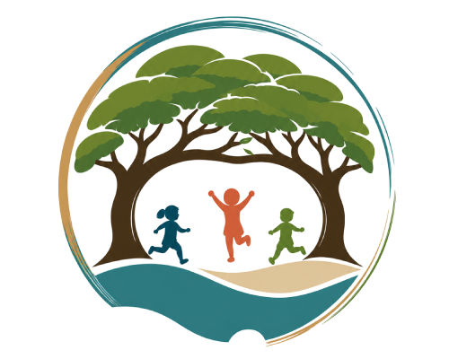
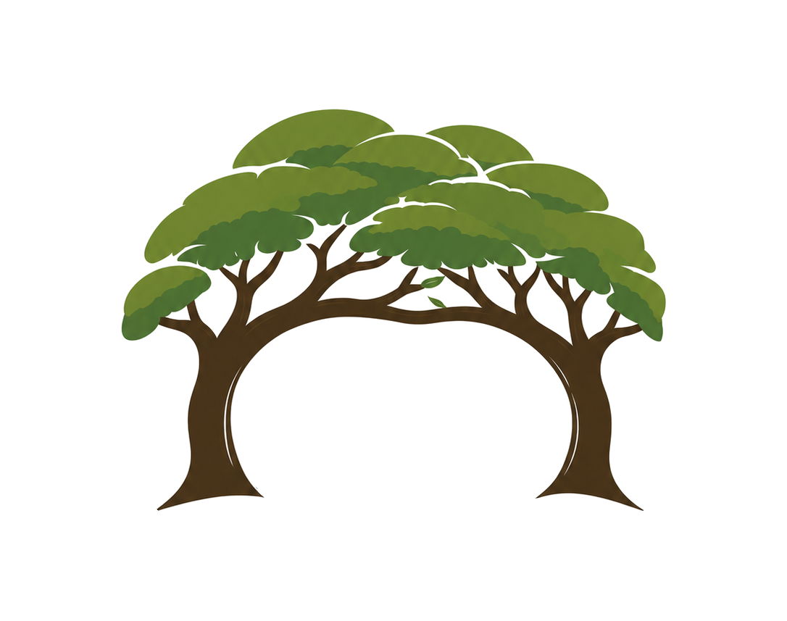
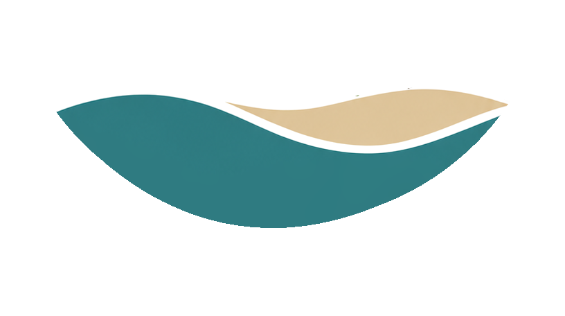
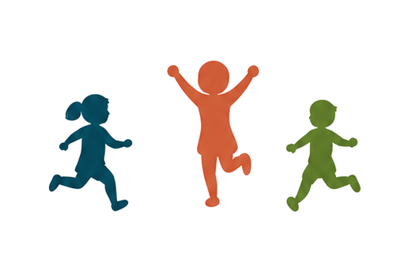
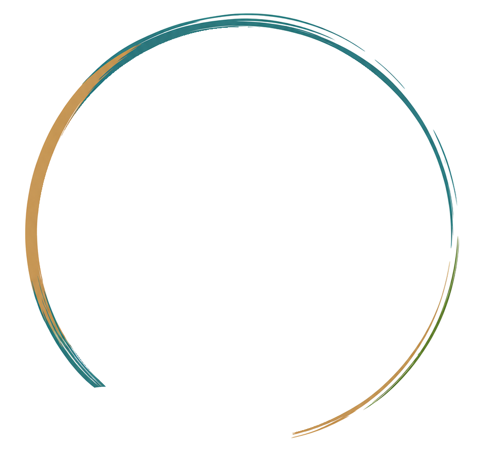

Why This Logo Is the Best Option

A true brand mark
Trees, children, typography, and color are not separate ideas here — the circular mark brings them together into one cohesive identity families can recognize before they even read the name.
Protected, but not confined
The children are surrounded by the trees and landscape, but they're still shown running, jumping, and exploring freely — an appropriate idea for early childhood education.
Not incidental landscaping
The monkeypods are one of Kilohana's most meaningful physical and emotional assets. Trunks create strength and stability. Branches stretch toward one another. Canopies visually connect — two trees creating one protective canopy: teachers and families, school and community, tradition and growth.


Felt, not illustrated
The logo doesn't try to draw the playground, the swings, or the play structure — that would quickly look complicated or dated. Instead it captures the feeling: trees set the scene, flowing forms suggest landscape and movement, children run and jump. A preschool where childhood happens outdoors.
Running. Jumping. Exploring.

Not standing still beneath the trees — moving. This is a place where children participate, explore, and have room to run, at a time when many homes offer limited space to do so.
No palm trees required
The flowing teal and sand forms beneath the children suggest land, movement, openness, breeze, water, and horizon. They evoke Hawaiʻi without relying on palm trees, hibiscus flowers, or surfboards — a subtler, more restrained sense of place, using exactly the blues, greens, ocean, sky, sand, and foliage the school identified as its own.
Not a preschool cliché
Connected to what Kilohana actually is: the green canopy and grass, the teal playground equipment, the tan structure, the warmth of the outdoor setting — distinctive, natural, and location-specific rather than off-the-shelf.
Warmth and professionalism
The script says: we know your child. The structured type says: you can trust us with your child. Together, stronger than either message alone.
Rooted in Care. Inspired to Grow.
Roots, moving forward
The circular emblem carries the authority of a traditional school seal. The expressive type, energetic color, and active children keep it from feeling dated — since 1966, and still moving forward.
More valuable than "cute"
A brand asset on its own
Website icons and social profiles are the school's highest-priority applications — the emblem is built for exactly that. And the brush-stroke ring keeps it human: a perfectly geometric circle would feel institutional; this one feels handcrafted.

The Circle of Care
A place where children are safe enough to explore, supported enough to grow, and welcomed enough to belong.
It doesn't look like a generic preschool. It feels like a visual expression of this particular school, this particular campus, and this particular community.